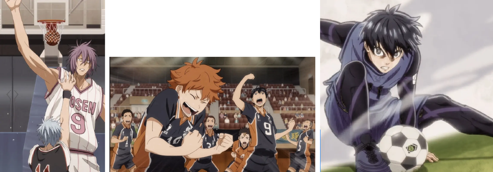
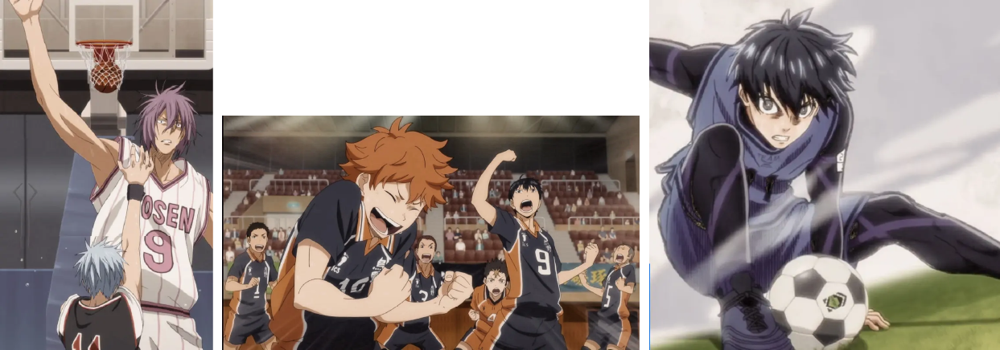

About the track
Til Emnesite skulle vi bygge videre på studiestartsprøvens læringsmål, hvor vi blev introduceret til
opstilling af moodboard og style tile, da vi selv skulle designe denne hjemmeside udfra egen valg.
Her fik jeg også prøvede krafter af med egne wireframes og layoutdiagram. Vi fik også tilddelt en
burgermenu som jeg selv stylede og implementere via javascript.
Link til
Emnesite
My Process
Valgte stilart: Retro
Emne: Sports Anime
Jeg valgte retro stilarten ud af valgmulighederne og var hurtig ovre på noget anime relateret. Jeg
gad ikke tage en åbenlys retning, så jeg begyndte at brainstorme og da jeg også er stor sportsfan,
så kom ideen retro magazine X sports anime til mig. Det gav mig meget kreativ frirum til at lege med
tekstur, farver og opsætning.
Her vises min wireframe, som skal afspejle et magasin, så jeg lagde vægt på billeder over tekst og
har derfor også behandlet mine egne billeder. Billede-stilen kendetegnes ved brugen af et varmt
”vintage” filter hen over alle billederne samt et grainy filter for at
fange retro følelsen. Dette spiller godt ind med farverne og følelsen af retro på hjemmesiden. Alle
billederne er taget, hvor karaktererne interagere med deres sportsgren.
På mit website er der benyttet to gestalt love: Loven om kontinuitet og Loven om lukkethed. Disse to
love samarbejder
med at kreere relation til elementerne vha. dannelse af linjer og ”indramning”
 

Mit logo (se styletile) er tegnet i samme farve-pallet som jeg har brugt til websitet og imitierer et old school sports logo.